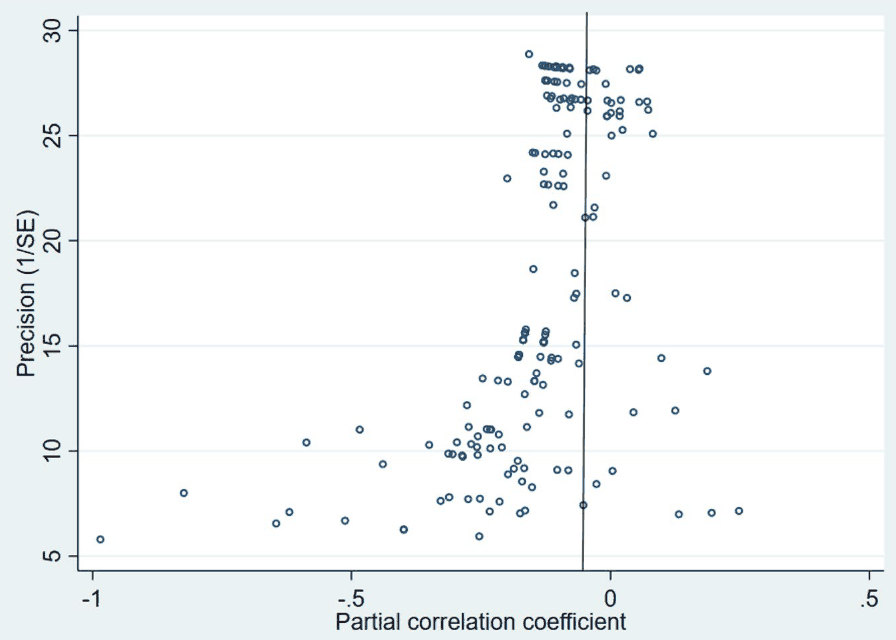

Abstract
We examine the use of central bank equity as an unconventional monetary policy tool. In this setting, a central bank employs digital currency to transfer digital cash to each household, thus supporting consumption directly when needed. The asset side of the central bank's balance sheet remains unchanged, and the creation of new digital cash is offset by a decrease in central bank equity. The central bank thus incurs an immediate loss but does not take on any additional risks for its future income statements. We address several objections to this policy, paying particular attention to the claim that weakening the financial strength of the central bank endangers long-term price stability. Through a meta-analysis of 176 estimates reported previously in the literature, we find that central bank financial strength has not historically correlated with inflation performance.

Reference: Mojmir Hampl, Tomas Havranek (2020), "Central Bank Equity as an Instrument of Monetary Policy." Comparative Economic Studies 62(1): 49-68.
How to cite
Mojmir Hampl, Tomas Havranek (2020), "Central Bank Equity as an Instrument of Monetary Policy." Comparative Economic Studies 62(1): 49-68.
BibTeX
@article{hampl2020cbequity,
author = {Mojmir Hampl and Tomas Havranek},
title = {Central Bank Equity as an Instrument of Monetary Policy},
journal = {Comparative Economic Studies},
year = {2020},
doi = {10.1057/s41294-019-00092-1},
}